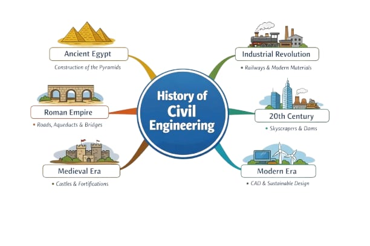

Early humans practiced basic civil engineering by building simple shelters, roads, and irrigation systems. They used natural materials such as wood, mud, and stone to create structures for survival. Early engineering focused mainly on protection and access to water sources.
Civil engineering developed significantly as great civilizations began constructing massive infrastructures. Egyptians built pyramids, temples, and irrigation canals, including the Great Pyramid of Giza. Mesopotamians developed drainage systems and city walls. Greeks improved architectural design and introduced early concepts of geometry in construction. Romans became famous for roads, aqueducts, and bridges such as the Pont du Gard, which supplied water efficiently.
Engineering advancements focused on religious and military structures. Construction of castles, fortresses, and cathedrals. Development of stronger bridges and improved road systems. Notable structures include the Notre-Dame Cathedral.
Scientific knowledge improved engineering design and methods. Engineers began applying mathematics and physics to construction. Leonardo da Vinci contributed conceptual designs for bridges, canals, and machines. More precise drawings and structural planning were introduced.
Civil engineering expanded into many specialized fields such as structural, transportation, environmental, geotechnical, and water resources engineering. Construction of skyscrapers, highways, airports, and dams. Examples include the Burj Khalifa, currently the tallest building in the world. Focus shifted toward safety, efficiency, and sustainability.
Civil engineering expanded into many specialized fields such as structural, transportation, environmental, geotechnical, and water resources engineering. Construction of skyscrapers, highways, airports, and dams. Examples include the Burj Khalifa, currently the tallest building in the world. Focus shifted toward safety, efficiency, and sustainability.
Modern civil engineers prioritize environmentally friendly and sustainable infrastructure. Green buildings, renewable energy facilities, and smart cities are now common. Engineers use advanced technologies such as computer modeling, drones, and Building Information Modeling (BIM). Sustainable projects aim to reduce environmental impact while meeting human needs.